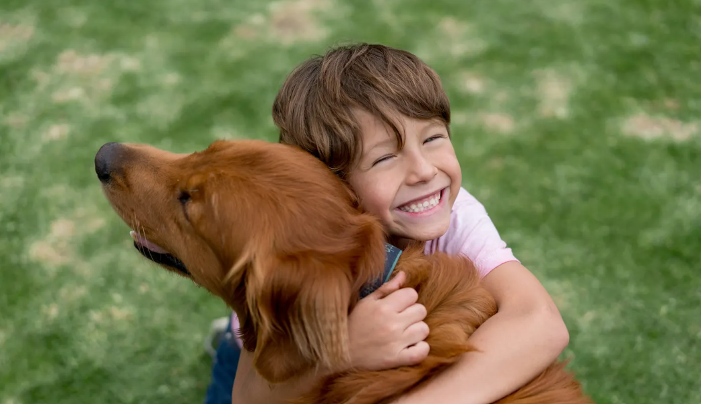

<body>

<div class="container">
  <div class="main-container">

    <div class="content-container">
      <div class="image-container">
        <h1>What Are The Best Dog & Puppy Breeds for Kids?</h1>
        
      </div>

      <div *ngIf="!isFullTextShown">
        <p> What are the best dogs for kids? It all depends on your household’s activity level, family energy, and
          living situation. But, in general, you can’t go wrong with a dog that has a gentle demeanor, friendly
          attitude, trainable nature, and an ability to keep up with your family.

          Those characteristics can cover a wide variety of breeds, however. So how do you choose the right four-legged
          fit? Consider the following factors as you research family dog breeds, and keep in mind that the best family
          dogs are truly unique to you and your needs.</p>

        <h1> What should I consider when looking for kid-friendly dogs? </h1>
        <ul>
          <li><b> Size</b>: Tiny dogs can be more fragile, and might be comfortable around older, more cautious kids.
            Some very large dogs may be right at home with a rough-and-tumble crew, but require regular walks or a yard
            to romp in. Make sure your family’s circumstances suit the size of your potential new pet.
          </li>
          <li><b> Energy: </b>Some dogs love to run and roam; others will gladly forgo fetch for cuddles on the couch.
            The best dogs for families—naturally—will vary depending on the family, so consider whether your crew is
            looking for a hiking buddy or a furry snuggle bug.
          </li>
          <li><b> Temperament:</b> Is your family prone to fits of giggles? More serious and stoic? Different dogs have
            different personalities too, and your pet’s should fit in right alongside your family’s.
          </li>
          <li><b> Care Requirements:</b> Have you thought about grooming? Who will take the dog for walks? Consider your
            potential pet’s needs and whether or not your family can meet them before committing to that adorable furry
            face.
          </li>
        </ul>
        <button (click)="toggleTextDisplay()" class="show-button" mat-button>Show More</button>
      </div>
      <div *ngIf="isFullTextShown">
        <p> What are the best dogs for kids? It all depends on your household’s activity level, family energy, and
          living situation. But, in general, you can’t go wrong with a dog that has a gentle demeanor, friendly
          attitude, trainable nature, and an ability to keep up with your family.

          Those characteristics can cover a wide variety of breeds, however. So how do you choose the right four-legged
          fit? Consider the following factors as you research family dog breeds, and keep in mind that the best family
          dogs are truly unique to you and your needs.</p>

        <h1> What should I consider when looking for kid-friendly dogs? </h1>
        <ul>
          <li><b> Size</b>: Tiny dogs can be more fragile, and might be comfortable around older, more cautious kids.
            Some very large dogs may be right at home with a rough-and-tumble crew, but require regular walks or a yard
            to romp in. Make sure your family’s circumstances suit the size of your potential new pet.
          </li>
          <li><b> Energy: </b>Some dogs love to run and roam; others will gladly forgo fetch for cuddles on the couch.
            The best dogs for families—naturally—will vary depending on the family, so consider whether your crew is
            looking for a hiking buddy or a furry snuggle bug.
          </li>
          <li><b> Temperament:</b> Is your family prone to fits of giggles? More serious and stoic? Different dogs have
            different personalities too, and your pet’s should fit in right alongside your family’s.
          </li>
          <li><b> Care Requirements:</b> Have you thought about grooming? Who will take the dog for walks? Consider your
            potential pet’s needs and whether or not your family can meet them before committing to that adorable furry
            face.
          </li>
        </ul>

        <h1>Best Small Dogs for Kids</h1>
        <h2> Dachshund</h2>
        <p> These playful pups are active, loveable and responsive to training. They enjoy an occasional adventure where
          they can sniff out a scent.

          <i> Good to Know: Dachshunds were bred to chase vermin, so they need regular exercise or play sessions, and
            may not do well with other very small pets. </i></p>

        <h2> French Bulldog </h2>
        <p> Sturdy, stout and silly, these pups are known for playful personalities and snort-inducing antics.
          <i> Good to Know: Exercise and grooming needs are minimal, but because of their shorter snout, you should take
            care of Frenchies in hot weather. Those adorable facial wrinkles should also be cleaned regularly with a
            damp cloth.
          </i>
        </p>

        <h2> Havanese</h2>

        <p> Once a pet among Cuban elite, the Havanese was born to be a companion and can be one of the best small dogs
          for families. He’s trainable, affectionate and sturdy for his short stature.
          <i> Good to Know: Havanese has a hypoallergenic coat that requires brushing 2-3 times a week and regular
            grooming.
          </i>
        </p>

        <h2> Papillon</h2>
        <p> These dainty dogs take to training eagerly. They are good-natured, high-spirited and gentle with children.
          <i> Good to Know: If you’re looking for small dog breeds for kids who are older, consider a Papillon. Very
            young children may not know how to properly handle their delicate frames.
          </i>
        </p>

        <h2> Cavalier King Charles Spaniel</h2>
        <p> The Cavalier King Charles loves companionship and shows it with an eager-to-please attitude. He’s good with
          other pets and friendly to anyone he meets.
          <i> Good to Know: These family-friendly dogs don’t need extensive exercise, but they do love to sniff, explore
            and play outside from time to time.
          </i></p>

        <h2> Pug</h2>
        <p> Staunchly silly and easily trainable, Pugs have earned a reputation as one of the best small dogs for kids.
          They’re patient and steady, but never take themselves too seriously.
          <i> Good to Know: Because of their short noses, care should be taken with Pugs in extreme heat. They may also
            generally wheeze and snore.
          </i>
        </p>

        <h1> Best Medium Dogs for Kids</h1>

        <h2> Beagle</h2>
        <p> These sweet-tempered fellows always seem to top the list of best dog breeds for families, and it’s no
          wonder. They prefer company and thrive in a pack—whether that’s made up of humans or other canines.
          <i> Good to Know: Beagles have strong instincts to follow their noses, and need a lot of exercise. They can
            also be stubborn and single-minded if they catch a particularly interesting scent.
          </i>
        </p>
        <h2> Poodle</h2>
        <p> Known for their intelligence, Poodles are adept at learning tricks and have a dignified and obedient
          demeanor.
          <i> Good to Know: While no dog is 100% hypoallergenic, Poodles tend to be better tolerated by those with
            allergies, and many love spending time in the water.
          </i>
        </p>
        <h2> Vizsla</h2>
        <p>
          If your family is always in the great outdoors and likes to be on-the-go, a Vizsla may love tagging along.
          They’re gentle, sensitive and have a keen nose for adventure.

          <i> Good to Know: Vizlsas are highly active and need to run, range and play strenuously—every day.
          </i>
        </p>

        <h1> Best Large Dogs for Kids</h1>

        <h2> Boxer</h2>
        <p> Patient and protective, Boxers love human company and are known as one of the best dogs for children.
          They’re also typically well-mannered with other household pets.
          <i> Good to Know: Boxers like to run, so they’re great companions for jogs or long walks. They may have a
            stubborn streak.

          </i></p>

        <h2> Collie</h2>
        <p> Gentle and mild-mannered, Collies are super family-oriented and particularly affectionate with children.
          Plus, they have the energy to keep up with the whole household!
          <i> Good to Know: Don’t confuse a standard Collie with a Border Collie. Border Collies have strong herding
            drives and can be a bit too much for some young children.
          </i>
        </p>

        <h2> Golden Retriever</h2>
        <p>
          There’s a reason they make incredible service dogs. Goldens are gentle, smart and enthusiastic, and their
          playful side makes them great with kids too.

          <i> Good to Know: Golden Retrievers are strong and athletic, and they have an active nature, so make sure they
            get plenty of exercise.

          </i>
        </p>

        <h2> Irish Setter</h2>
        <p> Irish setters are athletic, enthusiastic and even-tempered—all things that make them one of the best dog
          breeds for active families.
          <i> Good to Know: Irish Setters live their lives with gusto and need a daily outlet for energy, including
            plenty of exercise.

          </i>
        </p>

        <h2> Labrador Retriever
        </h2>
        <p> Adept service dogs, playful companions, excellent exercise buddies—is there anything Labs can’t do? Widely
          known as one of the best family dogs, these amiable pups are among the most popular in the United States.
          <i> Good to Know: Labs need daily exercise, and love to retrieve and swim. Their coat naturally sheds water.

          </i>
        </p>

        <h2> Newfoundland</h2>
        <p> There’s no better word to describe this gentle giant than “sweet.” Newfoundlands are notoriously patient,
          calm and great with children.
          <i> Good to Know: Of all the dogs that are good with kids, Newfoundlands are one of the biggest (up to 150
            pounds), so they need plenty of room to romp. Some may also drool.

          </i>
        </p>
        <button (click)="toggleTextDisplay()" class="show-button" mat-button>Show Less</button>
      </div>
      <h2> 15 Cute Dogs or Puppy Breeds</h2>
      <div class="animal-grid">
        <div *ngFor="let dog of cuteDogs" class="animal-card">
          <a (click)="viewDogDetails(dog)">
            
            <h3 class="animal-name"> {{ dog.name }} </h3>
          </a>
          <hr>

          <button (click)="redirectToAnimalPage(dog)" class="animal-available" mat-button> View Adoptable Pets for This
            Breed
          </button>
        </div>
      </div>
    </div>
  </div>
</div>
</body>
